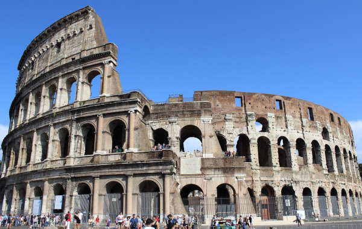
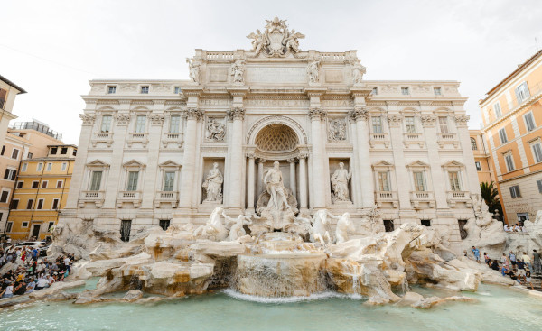
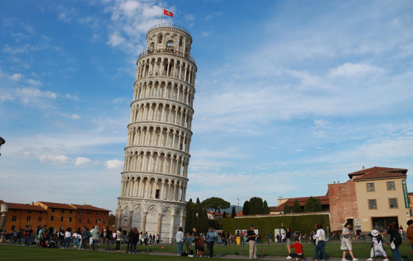
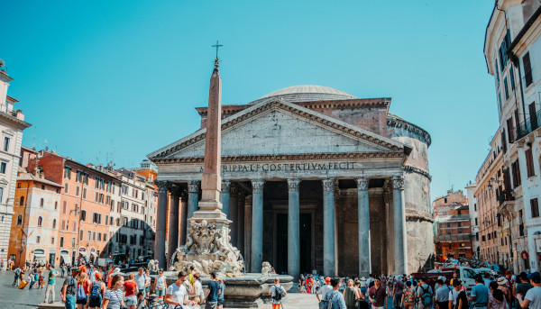

Itália: A Terra da Arte, História e Gastronomia
A Itália, um país localizado na península Itálica, é uma terra de contrastes e maravilhas que cativam viajantes de todo o mundo. Com uma extensão que abrange desde as montanhas dos Alpes até as praias ensolaradas da Sicília, a Itália oferece uma variedade de paisagens, culturas e histórias que desafiam a imaginação e encantam a todos que o exploram. Desde as grandes metrópoles até as comunidades rurais que preservam tradições milenares, a Itália é um destino que oferece uma experiência de viagem única e inesquecível.
Viajar pela Itália é uma jornada através de contrastes fascinantes. Você pode passear pelas ruas animadas de Roma, explorar os parques nacionais de Dolomitas e Abruzzo, ou desfrutar de um mergulho nas águas cristalinas de Amalfi. A diversidade cultural e natural da Itália oferece uma experiência enriquecedora, onde cada dia pode trazer novas descobertas e aventuras.
Documentos necessários
Alguns documentos são necessários para viajar para Itália e você irá apresentá-los para a polícia de fronteira, ainda no aeroporto. São eles:
- Passaporte válido, lembre-se de que o seu documento precisa possuir uma validade de, ao menos, 3 meses além do período da sua estadia na Itália;
- Passagens de ida e de volta, esse critério é válido somente para os brasileiros que não possuem cidadania europeia;
- Seguro viagem Europa com cobertura mínima de 30 mil euros para despesas médicas e hospitalares;
- Comprovante de hospedagem no país;
- Comprovantes financeiros: você deve comprovar que possui meios de se manter no país durante o período da sua estadia.
Qual a melhor época para ir para Itália?
A melhor época para viajar para Itália é durante os meses de abril e maio, na primavera, e durante os meses de setembro e outubro, no outono.
Essas duas épocas do ano são caracterizadas por temperaturas moderadas e por menos turistas. Assim, é provável que, se você viajar durante esses dois períodos, enfrente preços mais baixos e menores quantidades de turistas em filas.
Idioma
O italiano é a língua oficial da Itália.
Moeda
A moeda local é o Euro (EUR).
Atrações turísticas
1. Coliseu de Roma

Fonte: Pixabay
Símbolo da Itália e do Império romano, o Coliseu em Roma é um dos monumentos mais famosos do mundo e atrai nada mais nada menos do que 4 milhões de turistas todos os anos. Sua construção se iniciou no ano de 72 d.C. e, durante décadas, serviu de palco para gladiadores que lutavam entre si ou com animais para um público de mais de 70 mil romanos.
A visita às ruínas do Coliseu é um passeio obrigatório a todos os turistas que visitam Roma, não somente por sua grandeza mas por toda a sua história.
2. Fontana di Trevi

Fonte: Pexels
A Fontana di Trevi é um dos lugares com a maior concentração de visitantes por metro quadrado em Roma. Imortalizada no cinema, a Fontana di Trevi virou uma tradição pelos turistas que se aglomeram para fazer o tradicional ritual de jogar uma moeda na água que, conforme a lenda, faz com que o visitante retorne à cidade.
3. Torre de Pisa

Fonte: Pexels
A Torre Inclinada de Pisa, ou simplesmente Torre de Pisa, é sem dúvidas um dos ponto turísticos que mais faz jus ao quesito “icônico” dessa nossa lista. O local é bastante conhecido até por quem nunca visitou a Itália, e suspeitamos que sua estrutura peculiar seja um dos motivos. Um pouco torta, ela chama bastante atenção.
A construção teve início em 1173, para abrigar o sino da Catedral de Pisa. Já no começo foi notada a inclinação. Foi então que o engenheiro responsável pela obra tentou consertar o problema, mas acabou piorando. Nos anos 1990, o local chegou a ser fechado, mas depois de um projeto para salvar a construção, a obra foi reaberta ao público em 2001.
4. Panteão

O Panteão é uma dessas construções que trazem essa sensação de estar olhando para algo que carrega muita história. E, de fato, é assim mesmo. Construído entre os anos 118 e 128 – quase 2.000 de história -, o Panteão fica localizado em Roma e vale muito a pena visitar.
Este é o único entre os edifícios históricos a estar preservado integralmente nos dias atuais. Nos seus primórdios, foi um templo dedicado a todos os deuses e hoje guarda o túmulo de diversas personalidades históricas.